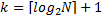
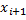
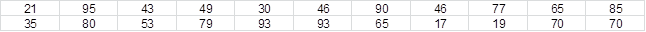
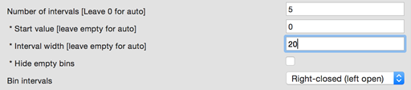
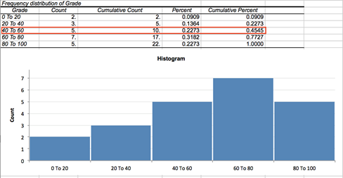

Frequency Tables
The Frequency Tables commands construct tables of frequency counts and percentages for discrete or continuous variables. A frequency table is a tabular representation of data that can be used to summarize a frequency distribution of a categorical, nominal or ordinal variable. Each row consists of five values: value (the value of input variable for discrete data or the class interval for continuous data), count (for discrete data: the number of times the value occurs within the data set; for continuous data: the number of observations that fall into the bin), cumulative count, percent, cumulative percent.
How To
Run: Statistics→Basic Statistics→Frequency Tables (discrete data)... or Frequency Tables (continuous data)...
Select one or multiple input variables.
Optionally, select a frequency variable. Frequency variable specifies the number of observations that each row represents. When omitted, each row represents a single observation.
Optionally, select a break (layer) variable. Break (layer) variable distinct values will cause separate tables to be generated.
Only complete rows are included (values for an input variable and for the frequency and layer variables, if any, are not missing).
Use the Plot histogram option to add a histogram for every frequency table.
Continuous data only:
Enter the number of class intervals
or leave the number of intervals option (Advanced Options) equal to zero to create a set of
evenly distributed bins between the variable's minimum and maximum values, the
number of bins is defined as 
To use an exact number and location of class intervals (same for all input variables) – specify both the lower bound (Start value) and the width of each interval (Interval width). If there is an observation that is less than the start value or greater than the upper bound, a bin “Up to“ or “More than” is added to the table.
Results
Report includes tables with frequency counts for each variable (for each level of the break variable, if any).
Discrete variables
– ith observation of the input variable.
Count - the number of observations for each unique value of the input variable ().
Cumulative Count - the number of observations with a value less than or equal to the .
Percent – percentage of compared to the count of all observation.
Cumulative Percent - percentage of the observations with a value less than or equal to the compared to the count of all observation.
Continuous variables
to 
Count - the number of observations falling within bin range.
Cumulative Count - the number of observations with the value less than or equal to the right boundary of the bin (for left-closed bins – strictly less than the right boundary of the bin).
Percent – percentage of observations compared to the count of all observation.
Cumulative Percent - percentage of the observations with a value less than or equal to the right boundary of the range compared to the count of all observation.
Example
The grades awarded for the assignment set for the class of
22 students are as follows:

Example: [Freq Tables dataset, “Grade” variable]
To construct the frequency table: run the Statistics→Basic Statistics→ Frequency Tables (continuous data) command and select the Grade column as the input variable. Then group the data into five class intervals from 1 to 100: set the interval width to 20, set the number of intervals to 5 and set the start value to 0.

The report produced includes the frequency table and the histogram for the Grade variable.

From the third row we can see that 22.7% of students have grades between 40 and 60 and approximately 45% of students were scored less than or equal to 60 (right-closed intervals).
References
Sturges, H. A. (1926). The choice of a class interval. Journal of the American Statistical Association, 21, 65–66.
Velleman, P. F., & Hoaglin, D. C. (1981). Applications, basics, and computing of exploratory data analysis. Boston, Mass: Duxbury Press.